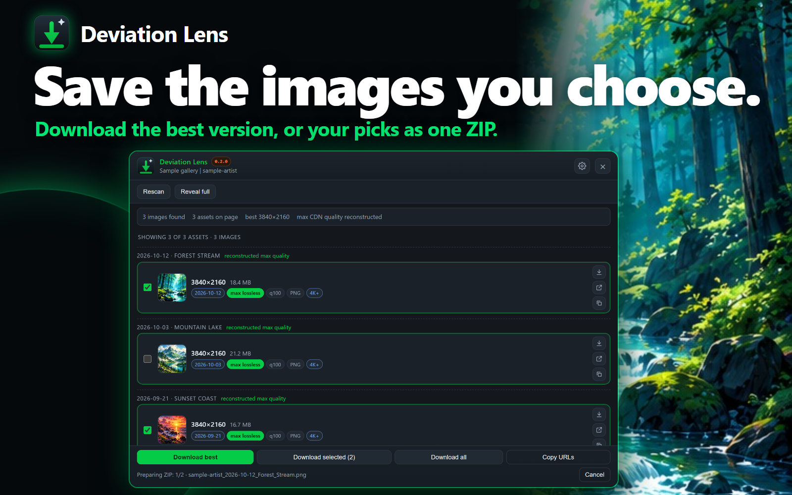
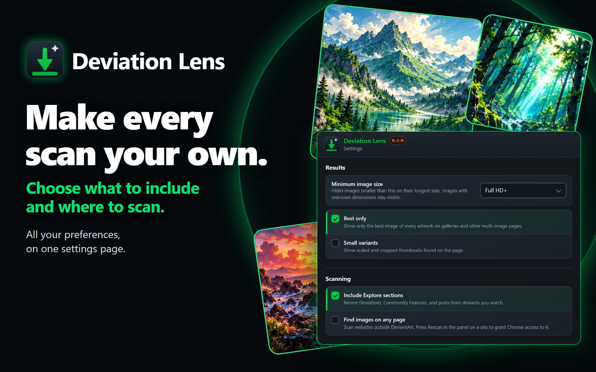
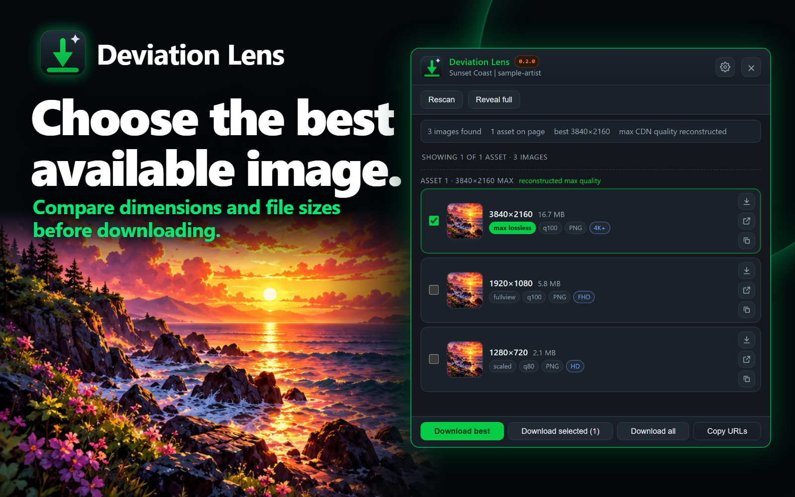
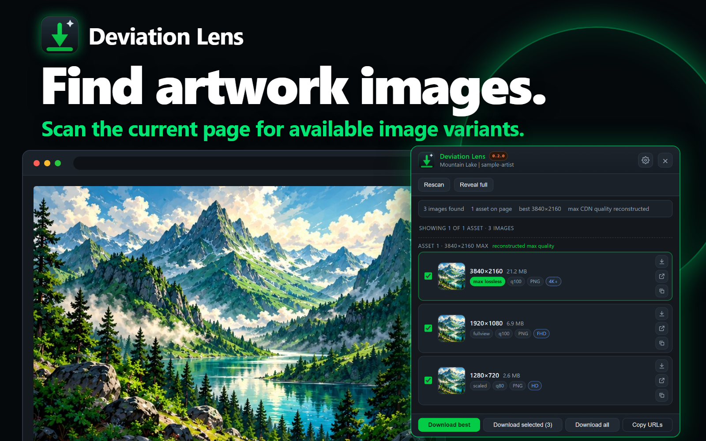
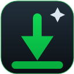

Room for the artwork
The page adjusts beside the sidebar. Close it to get your full view back.
Free & open source
An independent DeviantArt image downloader. Find available variants, compare their dimensions and quality, and save the files you choose.
Available now in the Chrome Web Store.
Free to use. Built independently of DeviantArt.

A 28-second tour of finding, comparing, and saving images. The video has no sound.
Shows the extension with sample artwork and data.
A closer look
See image dimensions and estimated file sizes together, then choose the files you want to save.

Choose which page sections to include and which image variants to see.

Compare dimensions, formats, and estimated file sizes.

Scan a page and review the image files it makes available.
Product previews with sample artwork. Available image quality depends on the source page and image host.
The page adjusts beside the sidebar. Close it to get your full view back.
Explore sections stay excluded by default. Your filtering choices are remembered.
No account or analytics. Scans and preferences stay in your browser.
Open a page. Open Deviation Lens.
The image details are right there.
Scan a deviation, gallery, or the home feed. Results refresh when you move to another page.
See dimensions and formats at a glance. File sizes load as you scroll, one at a time. Unavailable image URLs are removed.
Download the best available version, or save several files as one ZIP. Choose a folder and how files are named, or copy image URLs to use later.
What’s new in 0.2.0 · Full changelog
Saving several images creates one ZIP, with a manifest crediting each artist and source. Prefer separate files? Turn it off in settings.
Name files with a template such as {artist}/{date}_{title}, and hide images below HD, Full HD, QHD, or 4K.
Turn on the optional history to mark saved artwork and leave it out of bulk downloads. The list stays in your browser.
Deviation Lens is made for DeviantArt artwork and Wix-hosted image pages. You can also enable “Find images on any page” and grant access to another site.
The extension finds files the page makes available. The source site determines which resolutions can be accessed.
Read our privacy policyInclude recommended and watched artwork
Enable access to a site when you need it
Load details for images as you view them
Your preferences are saved in this browser.
Before you install.
Yes. Deviation Lens is free and open source. You can inspect the code, report problems, and contribute on GitHub.
Enable “Find images on any page” in the extension’s settings, then grant access to the site when Chrome asks. The extension collects images available on the page; site restrictions and lazy loading can affect the results.
It shows the versions available through the page and supported image URLs. An original download may be available on a deviation page, but the source site controls access and maximum resolution.
Deviation Lens can find supported files that the current page and image host make available. It does not bypass access restrictions or grant rights to use artwork. Follow the artist’s license and download only content you have permission to use.
Not yet. Deviation Lens is in early access until version 1.0, so features are still evolving and bugs are expected. See what changed in the changelog, and report reproducible problems in the GitHub repository.
Saving two or more images creates one ZIP, so your Downloads folder stays tidy and “Ask every time” opens one dialog instead of many. Each ZIP includes a manifest.csv listing the artist, title, and source of every file. To save separate files instead, turn off the ZIP option in the extension’s settings.
It is off unless you turn it on. When on, the extension keeps a list of the image addresses you saved, with the time, in your browser only, so it can mark them and skip them in bulk downloads. You can clear the list at any time in the extension’s settings.
No. Scan results are processed in your browser. Size checks and downloads request files directly from their image hosts. Read the privacy policy for more details.

Available nowInstall Deviation Lens from the Chrome Web Store. The extension is free, and its source is available on GitHub.
Add to Chrome Download the development buildchrome://extensions and enable Developer mode.manifest.json.Keep the extracted folder to reload or update your installation.